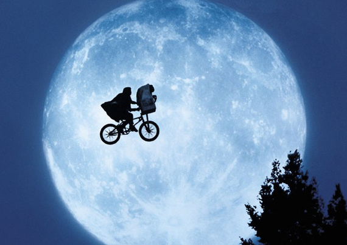
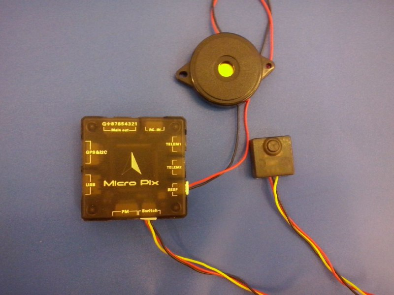
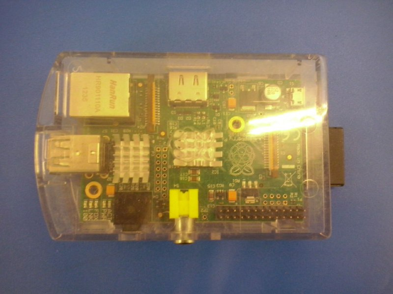

Riferimenti
Autore: Domenico Luciani
Relatore: Domenico Tegolo
Corelatore: Antonio Giambartino
- Sito: https://domenicoluciani.com
- Github: @DLion
- Email: domenicoleoneluciani@gmail.com
Introduzione
Veri e propri veivoli, ne esistono svariati modelli, dotati di 2 o più eliche e dispositivi vari.
Al giorno d'oggi l'uso di droni multi-rotore è in forte crescita, usati in molti ambienti moderni, dal miliatre alla fotografia...

Il problema

Il problema affrontato è quello del:
- Riconoscimento
- Tracking
Di oggetti o persone, dotando i droni multi-rotore di capacità quasi del tutto autonome per svolgere mansioni difficili da attuare per un essere umano riducendo il numero di incidenti
L'hardware
L'hardware è stato scelto per permettere a chiunque di poter raggiungere l'obiettivo prefissato grazie al costo quasi irrisorio delle componenti hardware usate...
Il drone
Costruito in casa e messo a disposizione dal mio corelatore Antonio Giambartino dell'azienda ST Microeletronics

Composto da:
- 1 frame in alluminio
- 1 gps
- 1 barometro
- 4 motori ed eliche
- 1 base in polistirolo
- 1 batteria LiPo
Scheda PixHawk
Permette di:
- Comandare i motori del multi-rotore
- Interfacciarsi con il barometro
- Interfacciarsi con il gps
- Dialogare con la GCS attraverso il protocollo MAVLink
Raspberry Pi
Il "cervello" del progetto, basato su arch. ARM consente di:
- Usare diverse distribuzioni scritte ad-hoc
- Interpretare o eseguire software scritti con linguaggi di medio-alto livello
- Interfacciarsi con i vari dispositivi in maniera semplificata
- Consentire una spesa contenuta
Abbiamo usato il modello B1 con 512Mb di RAM per mostrare l'efficienza dell'algoritmo
Scheda NUCLEO F401RE

Microcontrollore by ST, basato su arch. STM32, permette l'interfacciamento con dispositivi analogici, digitali e seriali
Programmabile attraverso l'SDK scaricabile dal sito https://mbed.org
Modulo BLE IDB04A1

Modulo aggiuntivo by ST, permette di usare la tecnologia BLE così da poter avviare il drone dalla GCS, interfacciandosi con la scheda NUCLEO connessa alla Raspberry Pi
Sensore ultrasonico HY-SRF05

Sfruttando il principio del sonar, consente di conoscere la distanza da un particolare ostacolo; usato per determinare la posizione del target consentendo al drone di fermarsi ed effettuare un landing sicuro
Bluetooth 4.0
Chiamato anche BLE, è un nuovo standard di comunicazione fra dispositivi di ultima generazione, usato in ogni genere di settore, da quello sportivo a quello videoludico consentendo prestazioni ben superiori rispetto alla versione precedente.
L'architettura prevede un master che sarà un tablet o un telefono con supporto BLE e degli slayer cioè i dispositivi che avranno il compito di inviare i dati richiesti dal master o di riceverne a loro volta.

Lo slayer si mette in ascolto aspettando una qualsiasi connessione dall'esterno, fase chiamata di Advertising. Il master invece avrà il compito di scansionare l'area cercando dispositivi compatibili
Una volta stabilita la connessione il master richiede i servizi e le caratteristiche del dispositivo, identificando gli UUIDs
Histogram backprojection
Tecnica usata per identificare un oggetto all'interno di una immagine tramite il suo histogramma retroproiettato
- Si ricavano gli histogrammi del target e del frame da analizzare
- Si ricava un terzo histogramma chiamato Ration Histogram facendo il rapporto fra i due histogrammi precedenti retroproiettandolo sul frame sostituendo i valori principali con i valori dell'histogramma risultante in quell'indice
- Si effettua una convoluzione di questa immagine risultante con una maschera di grandezza uguale a quella del nostro target
- Il picco nell'immagine convoluta ci indicherà la località in cui si trova il nostro target
Meanshift
Usato nel tracking di oggetti. Per ogni insieme di dati definisce una finestra di ricerca attorno ad essi calcolando la media, shiftando di volta in volta il punto centrale della finestra verso la locazione con maggiore densità, fino a raggiungere la convergenza.
Dopo ogni iterazione possiamo considerare che la finestra viene shiftata in una regione sempre più densa del dataset.
I punti stazionari ottenuti dall'ascesa del gradiente rappresentano la moda della funzione di densità di probabilità, tutti i punti associati con lo stesso punto stazionario appartengono allo stesso cluster.
Un problema noto è che usando questo algoritmo la finestra di ricerca rimane invariata ad ogni iterazione...
Camshift
- Si definisce una ROI
- Si individua la posizione iniziale della finestra di ricerca dell'algoritmo Meanshift, la locazione e la distribuzione da seguire
- Si calcola la distribuzione di probabilità del colore della regione centrata dalla finestra di ricerca del Meanshift
- Si itera il Meanshift per trovare il centroide della probabilità dell'immagine, viene salvata l'area di distribuzione e la locazione del centroide.
- Per il frame successivo si centra la finestra di ricerca nella posizione media trovata precedentemente e si imposta la dimensione della finestra per poi tornare allo step 3
MAVLink
Protocollo di comunicazione usato per far comunicare piccoli veicoli aerei con le stazioni base di terra.
La dimensione ridotta dei pacchetti permette al MavLink di prestarsi in maniera ottimale a quello che dovrebbe essere uno scambio di dati molto veloce e stabile.
Schema Progettuale
- GCS: Tramite BLE avvia il drone
- BLE: Modulo di comunicare collegato alla NUCLEO
- NUCLEO: Microcontrollore per interfacciare il sensore ultrasonico e il BLE con la Raspberry Pi tramite seriale
- HY-SRF05: Sensore ultrasonico interfacciato alla NUCLEO per l'identificazione di ostacoli o del raggiungimento del target
- CAM: Collegata alla Raspberry Pi tramite USB
- Raspberry Pi: Cervello del progetto, permette l'interfacciamento con tutte le perifiche
- PixHawk: Comanda i motori del drone, interfacciata alla Raspberry Pi per ricevere i comandi di volo ed inviare informazioni
- Multi-rotore: Il drone quadricottero da pilotare
Risultati
Risultati
Video here
Conclusioni e sviluppi futuri
Possibili sviluppi futuri potrebbero concentrarsi maggiormente sul sistema di guida usando un sistema di stereovisione e l'uso di camere più efficienti.
Aumentare la potenza di calcolo usando schede più potenti e con più memoria.
Usare tecnologie di comunicazione più estese